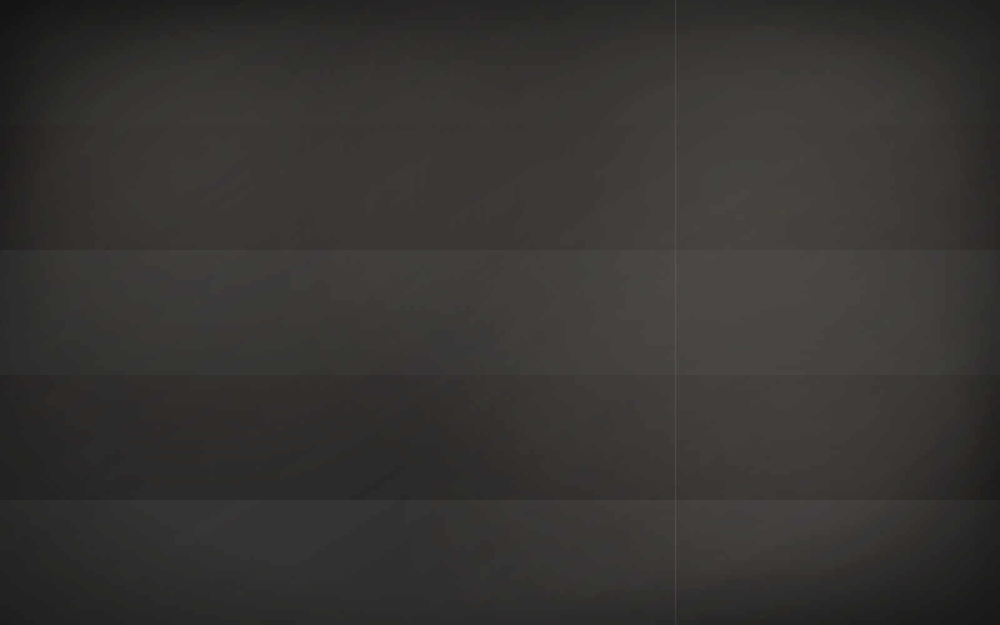

Project 01
Residential
Singular homes sited with restraint.

A practice working at the edge — cliffside, forest and water. Selected works, 2014–2026.
Singular homes sited with restraint.
Public buildings that gather people.
Ground that frames the architecture.
A practice working at the edge — cliffside, forest and water. Selected works, 2014–2026.
Singular homes sited with restraint. Public buildings that gather people.